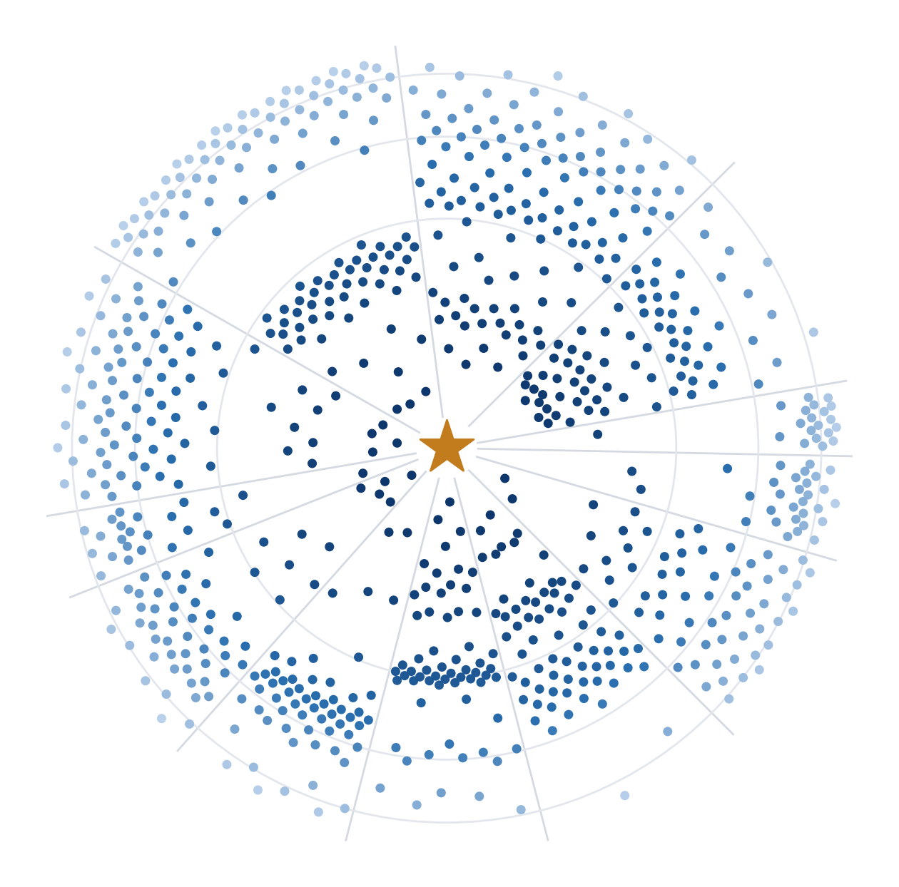
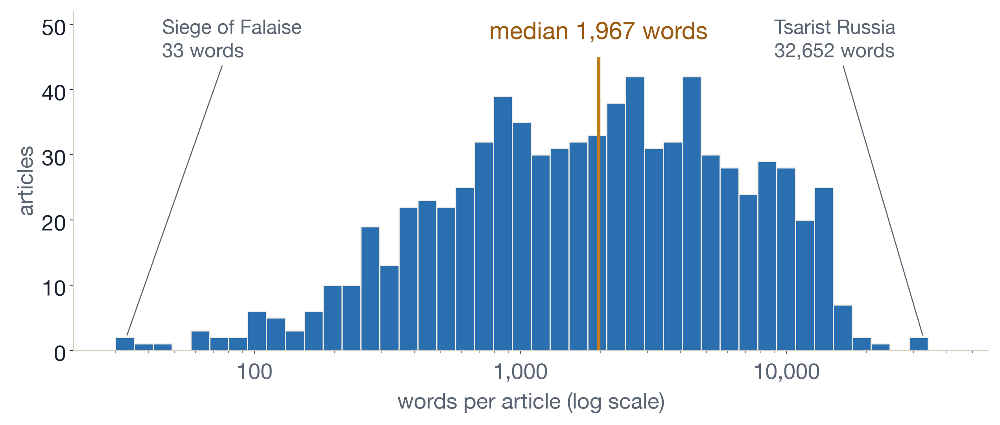
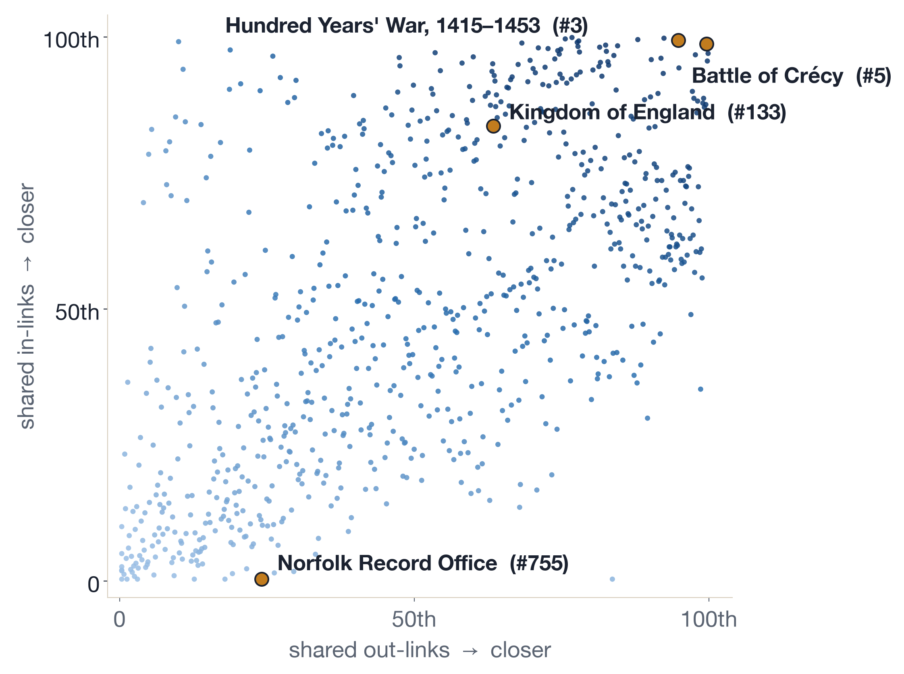
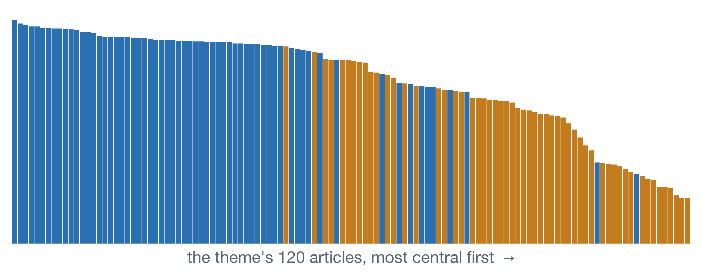
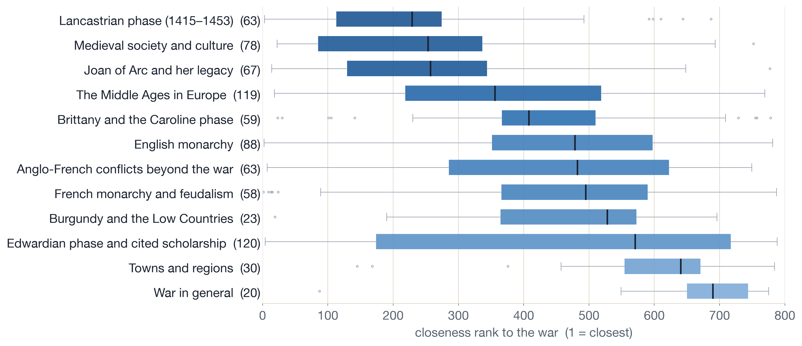

Info 202 · Final project
How the articles the war links to relate to the war and to each other, measured by their links. Explore it yourself in the interactive graph.

Collected through the Wikipedia API, Sep–Oct 2026, with redirects resolved and disambiguation pages, red links and citation links dropped.

A random sample of the linked articles. Not all of them are about the war.
Pages that link to both, across all of Wikipedia
Pages that both link to, rare pages weighted more
A, B = pages linking to each article; W = 7.2M English Wikipedia articles; N = 789. Percentile ranks because in-link scores run about 100× larger than out-link scores. Milne & Witten (2008).


Top words per type. Types and themes only partly agree (ARI 0.25): themes group by episode, types by kind of thing.

Where the war links to it → Lead
16 articles, median rank 164
What the war’s article opens with is what the links rank as most related. The link measure and the editors agree.
Article type → Battles vs Places
Battles 223, places 649
The war was fought in these places, yet they rank far: a town’s article links to everything in its history, not mainly to the war.
Links back → No + Length → Over 5,000 words
46 articles, median rank 634
Long, broad articles that never link back to the war share little with it, however much they say.
Each bar runs from rank 1 (closest to the war, dark) to 788 (farthest, light). The grey tick is the median of all articles.